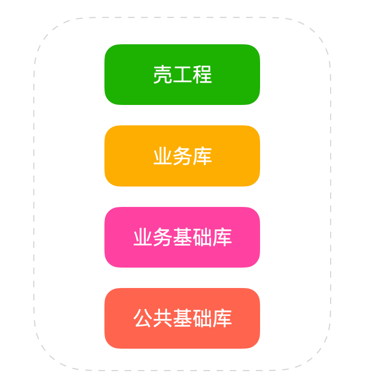
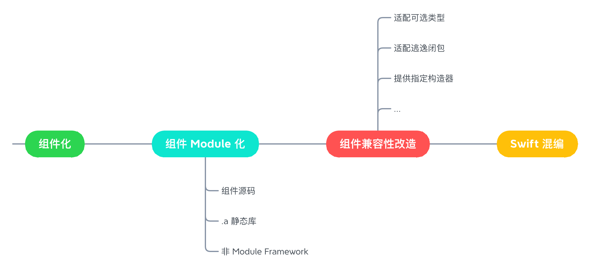
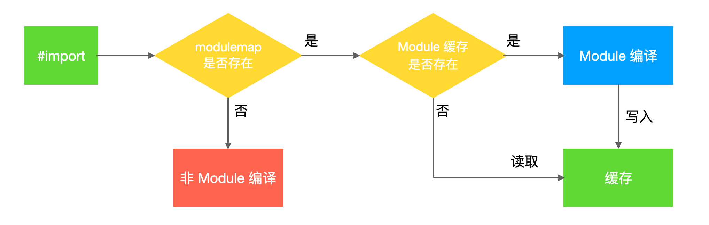
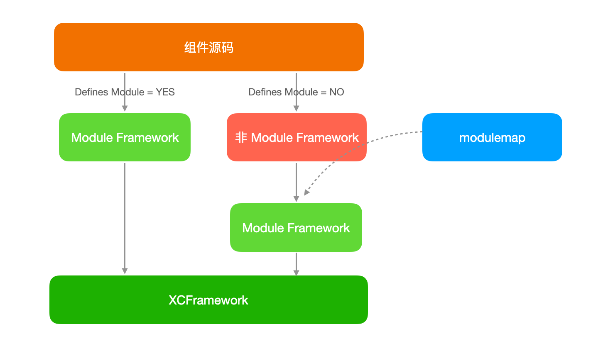

背景
云音乐 iOS App 经历多年的迭代，积累了大量的 Objective-C（以下简称 OC） 代码，目前已经完成主工程壳化，各层组件关系如下：

组件化后混编的场景主要集中在 Framework 内混编和 Framework 之间混编，Framework 内的混编成本较低，重头主要在 Framework 间的混编。
在云音乐中集成的创新业务，因为依赖的历史基础库较少，已经投入使用 Swift。主站业务迟迟没有投入，主要原因是涉及到大量的 OC 业务基础库和公共基础库不支持 Swift 混编，OC 组件库参与混编的前提是要完成 Module 化。

以上是我们实现混编计划的几个阶段，本文主要介绍在支持云音乐 Swift 混编过程中，Module 化阶段的分析与实践。
什么是 Modules
早在 2012 苹果就提出了 Modules 的概念（比 Swift 发布还要早），Module 是组件的抽象描述，包含组件接口以及实现。它的核心目的是为了解决 C 系语言的扩展性和稳定性问题。
Cocoa 框架很早就支持了 Module，并且前向兼容，正因为它的兼容性，纯 Objective-C 开发对它的感知可能不强。
AFramework.framework
├─ Headers
├─ Info.plist
├─ Modules
│ └─ module.modulemap
└─ AFramework
Module 化的 OC 二进制 Framework 组件，在 Modules 目录下存在一个 .modulemap 格式的文件，它描述了组件对外暴露的能力。当引用的组件包含 modulemap，Clang 编译器会从中查找头文件，进行 Module 编译，并将编译结果缓存。

Clang 编译器要求 Swift 引用的 Objective-C 组件必须支持 Module 特性。我们把 OC 组件支持 Module 的过程，称为 Module 化。
如何开启 Modules
Xcode Project Target 支持在 「Building Settings -> Defines Module」设置 Module 开关。
如果使用 CocoaPods 组件集成，支持如下几种方式进行 Module 化：
- 在 Podfile 添加 use_modular_headers! 为所有 pod 开启 Module；
- 在 Podfile 为每个 pod 单独设置 :modular_headers => true；
- 在 pod 的 podspec 文件中设置 s.pod_target_xcconfig = { 'DEFINES_MODULE' => 'YES' }；
- 在 Podfile 使用 use_frameworks! :linkage => :static。
前三种方式在编译产物是 .a 静态库时生效，如果使用了 use_framework!，源码编译产物是 Framework，默认就会包含 modulemap。
Module 化现状分析
云音乐工程使用 CocoaPods 集成依赖库，几乎所有库已经完成 Framework 静态化，而大部分静态库都是在未打开 Module 下的编译产物。
那么要让 OC 静态库支持 Module，直观的方案是，直接打开 Module 化开关，重新构建 Framework 静态库，让产物包含 modulemap。
然而直接打开开关，组件大概率会编译失败。原因主要有两点：
- 组件的 Module 具有依赖传递性，当前组件打开 Module 编译，要求它所有的依赖库，都已经完成 Module 化。在云音乐庞大的组件体系里面，即使理清其中的依赖关系，用自动化的方式自下而上构建，成功的可能性也极低。
- 历史代码存在不少引用方式不规范，宏定义「奇淫技巧」，以及 PCH 隐式依赖等问题，这些问题导致组件库本身无法正常 Module 编译。
Module 化方案
目前云音乐的二进制组件主要分为三种类型：
- Module Framework
- 非 Module Framework
- .a 静态库
Module Framework 是在 Defines Module 打开时的编译产物，这种类型没有改造成本，只需要在 CI 阶段，将不同架构的 Framework 封装成 XCFramework 压缩并上传到服务器。
对于非 Module Framework 我们尝试了一种成本比较低的方案，在组件库 Module 关闭的条件下，先将其编译成静态库，再用脚本自动化生成对应的 modulemap 文件，放到 Famework/Modules 目录。

主动塞 modulemap 的方案之所以可行和 Clang Module 的编译原理有关。当使用 #import <NMSetting/NMAppSetting.h> 引用依赖时, Clang 首先会去 NMSetting.framework 的 Header 目录下查找对应的头文件是否存在，然后在 Modules 目录下查找 modulemap 文件。
modulemap 中包含的 umbrella header 对应的是组件公开头文件的集合。如果引用的头文件能找到，Clang 就会使用 Module 编译。
// NMSetting.framework/Modules/NMSetting.modulemap
framework module NMSetting {
umbrella header "NMSetting-umbrella.h"
export *
module * { export * }
}
Clang 并不关心 modulemap 来源，只会按照固定的路径去查找它是否存在。所以采用主动添加 modulemap 的方式，能达到「欺骗」编译器的目的。
这种方式的好处是，只要当前组件被引用时能正常 Module 编译即可，不需要考虑它依赖组件的 Module 编译是否有问题。缺点是不彻底，假设静态库组件公开头文件，存在不符合 Module 规范的情况，即使有 modulemap，编译时依然会抛出错误：
Could not build moudle 'xxx'.
对于未知的 Module 编译问题，只能拉对应的源码针对性的解决。
以下是我们遇到的一些比较典型的 Module 问题，以及对应的解决思路。
Module 化问题
宏定义找不到
在使用 OC 开发时，习惯于在 .h 文件定义一些宏，方便外部访问，然而 Swift 不支持定义宏，在引用 OC 的宏定义时，会将其转为全局常量。不过转换能力比较有限，仅支持基本的字面量值，以及基本运算符表达式。
例如：
#define MAX_RESOLUTION 1268
#define HALF_RESOLUTION (MAX_RESOLUTION / 2)
转换为：
let MAX_RESOLUTION = 1268
let IS_HIGH_RES = 634
宏定义的内容如果包含 OC 的语法实现，那么这个宏对 Swift 是不可见的。如果要支持 Swift 访问，需要对宏进行包装。
// Constant.h
#define PIC_SIZE CGSizeMake(60, 60)
+ (CGSize)picSize;
// Constant.m
+ (CGSize)picSize {
return PIC_SIZE;
}
以上的宏问题还算比较直观，在云音乐组件中，还存在一些使用 #include 预处理指令，来使用宏的场景。
C 系语言传统的 #include 引用是基于文本替换的方式实现的，利用这个特性能够屏蔽宏的实现细节。
// A.h
#define NM_DEFINES_KEY(key, des) FOUNDATION_EXTERN NSString *const key;
#include "ItemList.h"
#undef C
// ItemList.h
NM_DEFINES_KEY(AKey, @"a key")
NM_DEFINES_KEY(BKey, @"b key")
在非 Clang Module 下编译，上述代码能够正常工作，然而在打开 Module 之后，宏定义 NM_DEFINES_KEY 就找不到了。
这是因为 Module 编译时，#include 不再是简单的文本替换模式，而是与 module 建立链接关系。
下面是一个开启 Module 编译的例子，main.m 文件的预处理结果，共只有几行代码。
// main.m preprocess result.
#pragma clang module import UIKit /* clang -E: implicit import for #import <UIKit/UIKit.h> */
# 10 "/Users/jxf/Documents/Workspace/Demo/ModuleDemo/ModuleDemo/main.m" 2
int main(int argc, char * argv[]) {
NSString * appDelegateClassName;
}
如果未开启 Module，UIKit 的所有头文件都会被复制进来，代码量将达到数万行。
正因为这种差异，Module 编译时 #include "ItemList.h" 不会将内容复制到 A.h 文件，就会导致无法访问到它的宏定义。
Module 提供了相应的解决方案，就是自定义 modulemap。前面已经介绍，默认情况下 modulemap 的格式为：
framework module FrameworkName {
umbrella header "FrameworkName-umbrella.h"
export *
module * { export * }
}
FrameworkName-umbrella.h 包含当前组件对外暴露的所有头文件，该文件会在使用 CocoaPods 集成时同步生成。我们可以使用 textual header 关键声明头文件，这样该头文件在被导入时，会降级为文本替换的形式。
framework module FrameworkName {
umbrella header "FrameworkName-umbrella.h"
textual header "ItemList.h"
export *
module * { export * }
}
自定义 modulemap 还有一些额外的配置，需要自己生成组件公开的头文件集合 umbrella.h，并在 podspec 指定该 modulemap，。
s.module_map = "#{s.name}.modulemap"
在我们 CI 打包流程中，如果检测到组件自定义了 modulemap 就会使用自定义的文件，不再自动塞入模版化的 modulemap。
如果 ItemList.h 不需要对外暴露，还有一种更简单的方案，直接在 podspec 将其声明为私有，这样在静态库 Headers 目录下就不会导出，也就不会出现 Module 编译问题。
头文件缺失
云音乐业务基础库默认会使用 PCH（Precompiled Headers） 文件，它的好处主要有两点，一是能一定程度上提高编译效率，二是为当前组件库提供统一外部依赖，这种依赖关系是隐式的，PCH 已经添加的依赖，组件内使用时不需要再手动 import。
这种方式确实能提供便利性，随着业务的快速迭代，大家也都适应了不引头文件的习惯，然而依靠隐式依赖关系，为 Module 编译留下了隐患。
看个具体的例子：
// <B/NMEventModel.h>
#import <UIKit/UIKit.h>
@interface NMEventModel : NSObject
@property (nullable, nonatomic, strong) NMEvent *event;
@end
B 组件中的 NMEventModel 引用了 NMEvent，它来自另一个组件库 A，A 已经在 B.pch 中 import，所以在 B 组件源码编译时能通过隐式依赖找到 NMEvent。
当 C 组件同时引用 A 组件和 B 组件的静态库时，因为 B 组件静态化后已经没有 PCH，正常来说访问 NMEventModel.h 应该编译报找不到 NMEvent 才对，而实际上在非 Module 编译时是不会有问题的。
// C/Header.h
#import <A/NMEvent.h>
#import <B/NMEventModel.h>
这是因为在非 Module 环境下 #import <A/NMEvent.h> 会把 NMEvent 的定义复制到当前文件，为 NMEventModel.h 编译提供了上下文环境。
然而当开启 Module 编译时，会报 B 组件是非 Module 的错误（Module 依赖传递性），错误原因是 NMEventModel.h 头文件找不到NMEvent类。
其实还是前面介绍的 Clang Module import 机制改变的原因，开启 Module 后，会使用独立的上下文编译 B 组件的 NMEventModel.h，缺少了NMEvent上下文。
要解决该场景下的问题，比较粗暴的方式是，在 Module 编译上下文中注入它的 PCH 依赖。但是对于二进制组件来说，它已经没有 PCH 了，如果显式地暴露 PCH，仅仅是为了头文件的 Module 编译，会导致依赖关系进一步恶化。
我们对这种情况做了针对性的治理，补充缺失的头文件依赖，历史库解决完一波后，默认都开启 Module 编译，如果开发过程中，使用不当编译器会及时反馈。对于新组件库增加 PCH 卡口限制。
.a 静态库
Module 化的关键是需要有 modulemap 文件，而历史的二方、三方库，有些是.a的静态库。
.a 文件只是可执行文件的集合，不包含资源文件，针对这种情况需要使用 Framework 进行二次封装。
主要有两种方案：
第一种，在 .a 文件目录注入一个空的 .swift 文件，并在 podspec 指定 source_files 和 swift_version，pod install 时 Cocopods 会自动生成对应的 modulemap 文件。
第二种，采用 CocoaPods 插件，在 pre_install 阶段，设置pod_target.should_build，让 CocoPods 自动生成 modulemap。
方案二的成本相对较低，最终我们采用了方案二。
总结
Objective-C 组件库 Module 化是支持 Swift 混编的基础，Module 化的核心是提供 modulemap 文件，要生成 modulemap，组件需打开 Module 编译，这个过程中可能会遇到各种未知问题。
云音乐在治理过程中遇到的问题相对比较收敛，主要集中在 Module 编译方式的变化，导致一些上下文信息丢失，一部分问题能够通过自动化的方案解决，而有些问题仍然需要进行人工验证。
规划展望
Module 组件防劣化。 在 Module 化完成后，需防止再次劣化，我们在本地源码开发阶段开启 Module，尽可能早的暴露问题。针对 PCH 禁止公开的头文件对它隐式依赖，并限制新组件使用 PCH。
Objective-C 接口兼容性改造。 OC 接口转成 Swift 可能会存在一些安全性和易用性问题，甚至有些 API 无法实现自动桥接，都需要进行改造。
规范化头文件引用。 头文件不规范问题，导致 Module 编译失效，也是比较常见的例子。通过在 CI 阶段对新增代码的头文件引用方式进行校验，避免不规范的代码合入。
参考资料：
clang.llvm.org/docs/Module…
llvm.org/devmtg/2012…
developer.apple.com/documentati…
developer.apple.com/documentati…
tech.meituan.com/2021/02/25/…
作者：网易云音乐技术团队
链接：https://juejin.cn/post/7207269389474037817
来源：稀土掘金
著作权归作者所有。商业转载请联系作者获得授权，非商业转载请注明出处。